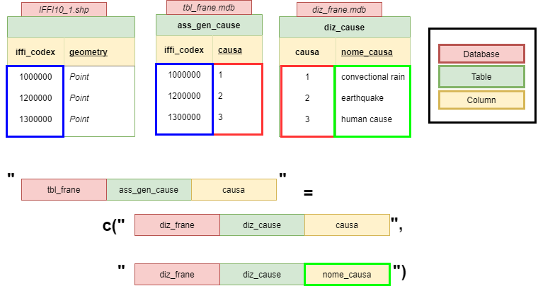
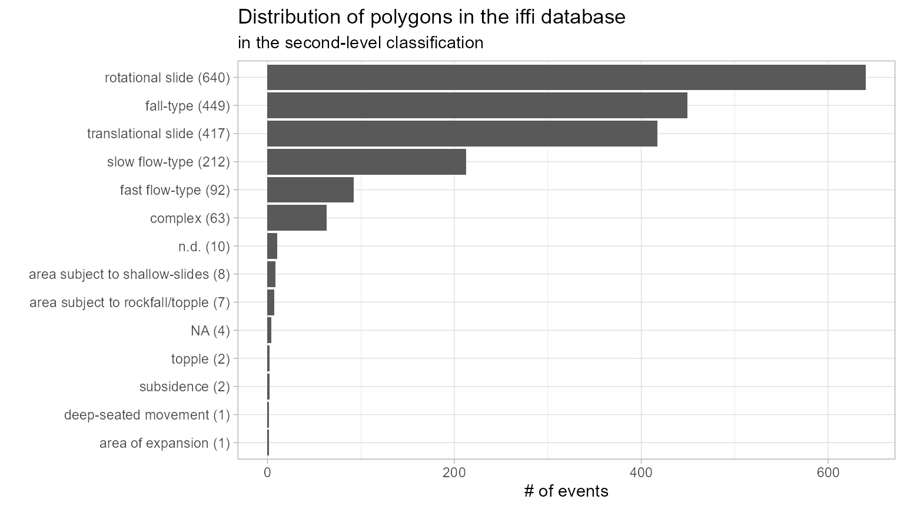
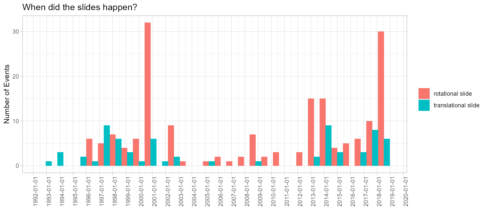

example1.RmdThe iffitoR-package exists to fascilitate the import of data stored in the iffi-database (Inventario dei Fenomeni Franosi in Italia) into R. This includes the calculation of the unique “iffi”-codex in the dabases. The joins within the non-spatial databases and the subsequent join to a shapefile.
The shapefile as well as the non-spatial data both in the end contain a column that holds the unique identifier for each mass movement. The so called iffi-kodex. Here we give a short introdcution to the package and how to query the data from the databases.
As the format of the iffi-database is likely to change at some point in the near future, the code here is far from beeing good. Still, it hopefully does what it is supposed to do.
library(iffitoR)
library(glue)
library(RODBC)
library(forcats)
library(dplyr)
library(ggplot2)
library(tools)
library(stringr)
library(sf)The idea is, that there are three important files each time the make_shapefile gets called
PIFF_ID)In the attri-argument we pass a vector of the columns that are already in the attribute_database and don’t need any join to the dictionary database

In the joins-argument we pass a named list of hardcoded columns that are necessaey for the link and the data we actually want. The names are the "<name_of_attributedatabase>.<table>.<column_to_link>" and the values are c("<name_of_dictionary_database>.<table><column_to_link>", "<name_of_dictionary_database>.<table><column_of_data_we_want")
An example could look like this:
joins = list(
"tbl_frane.Geologia.litologia" = c(
"diz_frane.diz_litologie.litologia",
"diz_frane.diz_litologie.nome_litologia"
),
"tbl_frane.clas_ii_liv.movimento" = c(
"diz_frane.diz_movimenti.movimento",
"diz_frane.diz_movimenti.nome_movimento"
),
"tbl_frane.Generalita.Cod_tipo" = c(
"diz_frane.diz_tipo_movi.cod_tipo",
"diz_frane.diz_tipo_movi.tipologia"
)
)We only need to have the right paths at hand and the function make_shapefile will (hopefully) return an object of type sf
Important: The names of the databases are the names without any extension
Now we can call the function
# I use the path to the databsaes on the Eurac Network (am I connected to the VPN?)
# the path to the iffi polygons
landslide_poly_path = "\\\\projectdata.eurac.edu/projects/Proslide/Landslides/Iffi_db_xxxx_to_2018/exportperEurac2020/Shapefiles/IFFI10_5.shp"
# the path to the iffi points
landslide_point_path = "\\\\projectdata.eurac.edu/projects/Proslide/Landslides/Iffi_db_xxxx_to_2018/exportperEurac2020/Shapefiles/IFFI10_1.shp"
# the path to the folder with the iffi-databases
database_dir = "\\\\projectdata.eurac.edu/projects/Proslide/Landslides/Iffi_db_xxxx_to_2018/exportperEurac2020/database"
# we only want the dates from the attributes tables
attri = c("anno_min",
"mese_min",
"giorno_min")
iffi_sf = iffitoR::make_shapefile(database_dir=database_dir,
attribute_database_name = "tbl_frane",
dictionary_database_name = "diz_frane",
shapefile = landslide_point_path,
attri = attri,
joins=joins)
#> [1] "Found Databases: \\\\projectdata.eurac.edu/projects/Proslide/Landslides/Iffi_db_xxxx_to_2018/exportperEurac2020/database/diz_frane.mdb"
#> [2] "Found Databases: \\\\projectdata.eurac.edu/projects/Proslide/Landslides/Iffi_db_xxxx_to_2018/exportperEurac2020/database/frane2000.mdb"
#> [3] "Found Databases: \\\\projectdata.eurac.edu/projects/Proslide/Landslides/Iffi_db_xxxx_to_2018/exportperEurac2020/database/tbl_frane.mdb"
#> [1] "ass_gen_biblio: subid or id colum have length 0"
#> [1] "cartografie_ErroriImportazione: does not have the id and subid col"
#> [1] "datazioni_ErroriImportazione: does not have the id and subid col"
#> [1] "Generalita_ErroriImportazione: does not have the id and subid col"
#> [1] "tblLivelli: subid or id colum have length 0"
#> [1] "volo_aereo: does not have the id and subid col"
#> [1] "Created iffi-kodex for: ass_gen_archivi"
#> [1] "Created iffi-kodex for: ass_gen_cause"
#> [1] "Created iffi-kodex for: ass_gen_danno_i"
#> [1] "Created iffi-kodex for: ass_gen_elementi_rischio"
#> [1] "Created iffi-kodex for: ass_gen_foto"
#> [1] "Created iffi-kodex for: ass_gen_indagini"
#> [1] "Created iffi-kodex for: ass_gen_interventi"
#> [1] "Created iffi-kodex for: ass_gen_leggi"
#> [1] "Created iffi-kodex for: ass_gen_metodo"
#> [1] "Created iffi-kodex for: ass_gen_ord"
#> [1] "Created iffi-kodex for: ass_gen_precursori"
#> [1] "Created iffi-kodex for: attivazioni_precedenti"
#> [1] "Created iffi-kodex for: Attivita"
#> [1] "Created iffi-kodex for: Cartografia"
#> [1] "Created iffi-kodex for: clas_ii_liv"
#> [1] "Created iffi-kodex for: costi"
#> [1] "Created iffi-kodex for: danni_ii_liv"
#> [1] "Created iffi-kodex for: danni_iii_liv"
#> [1] "Created iffi-kodex for: danni_persone"
#> [1] "Created iffi-kodex for: Datazione"
#> [1] "Created iffi-kodex for: documenti_iconografici"
#> [1] "Created iffi-kodex for: Generalita"
#> [1] "Created iffi-kodex for: Geologia"
#> [1] "Created iffi-kodex for: idrogeologia"
#> [1] "Created iffi-kodex for: Morfometria_frana"
#> [1] "Created iffi-kodex for: posizione_frana_ver"
#> [1] "Created iffi-kodex for: Uso_Suolo"
#> [1] "The variable: anno_min is found in table: Datazione"
#> [1] "The variable: mese_min is found in table: Datazione"
#> [1] "The variable: giorno_min is found in table: Datazione"
#> Reading layer `IFFI10_1' from data source `\\projectdata.eurac.edu\projects\Proslide\Landslides\Iffi_db_xxxx_to_2018\exportperEurac2020\Shapefiles\IFFI10_1.shp' using driver `ESRI Shapefile'
#> Simple feature collection with 8919 features and 3 fields
#> geometry type: POINT
#> dimension: XY
#> bbox: xmin: 606495.1 ymin: 5121694 xmax: 760480.5 ymax: 5219081
#> projected CRS: ETRS89 / UTM zone 32N
#> [1] "joind the tables: Geologia and diz_litologie"
#> [1] " on the columns litologia and litologia"
#> [1] " Resulting table is has 13468 rows, and 3 columns"
#> [1] ""
#> [1] "joind the tables: clas_ii_liv and diz_movimenti"
#> [1] " on the columns movimento and movimento"
#> [1] " Resulting table is has 14523 rows, and 3 columns"
#> [1] ""
#> [1] "joind the tables: Generalita and diz_tipo_movi"
#> [1] " on the columns Cod_tipo and cod_tipo"
#> [1] " Resulting table is has 10647 rows, and 3 columns"
#> [1] ""
dplyr::glimpse(iffi_sf)
#> Rows: 8,919
#> Columns: 8
#> $ PIFF_ID <dbl> 20100, 30100, 30200, 30300, 30400, 30500, 30600, 401...
#> $ anno_min <int> 1967, 1993, 1999, 1999, 2009, 2012, NA, NA, NA, 2011...
#> $ mese_min <int> 1, 9, 1, NA, 5, 4, NA, NA, NA, 1, NA, 8, 2, NA, 2, 2...
#> $ giorno_min <int> 1, 25, NA, NA, NA, 23, NA, NA, NA, 10, NA, 7, 11, NA...
#> $ nome_litologia <chr> "r. metamorfiche a fogliazione pervasiva", "rocce ca...
#> $ nome_movimento <chr> "Complesso", "Aree soggette a crolli/ribaltamenti di...
#> $ tipologia <chr> "Complesso", "Aree soggette a crolli/ribaltamenti di...
#> $ geometry <POINT [m]> POINT (726753.9 5210405), POINT (669896.9 5122...AS a first distinction events in the iffi-databse are classified according to two levels. The first level being a more coarse classification, and the second one a more detailed one
In italian they are called tipologia (first level, more coarse) and nome_movimento (second level and finer)
The iffitoR::translate_iffi-function can be used to translate exactly those two columns. They will afterwards be called first_level and second_level
This function will fail, if the columns tipologia and nome_movimento are not queried in the joins
iffi_eng = iffitoR::translate_iffi(iffi_sf)
iffi_eng %>% select(c(first_level, second_level)) %>% head()
#> Simple feature collection with 6 features and 2 fields
#> geometry type: POINT
#> dimension: XY
#> bbox: xmin: 669308.7 ymin: 5122417 xmax: 726753.9 ymax: 5210405
#> projected CRS: ETRS89 / UTM zone 32N
#> first_level second_level
#> 1 complex complex
#> 2 area subject to rockfall/topple area subject to rockfall/topple
#> 3 fall-type/topple fall-type
#> 4 fall-type/topple fall-type
#> 5 fall-type/topple fall-type
#> 6 fall-type/topple fall-type
#> geometry
#> 1 POINT (726753.9 5210405)
#> 2 POINT (669896.9 5122515)
#> 3 POINT (669673.8 5122600)
#> 4 POINT (669521.5 5122417)
#> 5 POINT (669308.7 5122601)
#> 6 POINT (669480.6 5122624)In order get some columns that make it easier to get an idea about the temporal information there is the funciton get_date_information
This creates the three integer columns year.int, month.int and day.int. In addition in creates two columns of class date. One beeing the exact date the other one the 1st of January of the year of the movement.
iffi_date = iffitoR::get_date_information(iffi_eng)
#>
#> Added the columns:
#>
#> date_info (chr) - (eiher 'year', 'month', 'day' or 'no date')
#> year.int (integer)
#> month.int (integer)
#> day.int (integer)
#> year.posix (date) (object of class date, referenced to the 1st of January of the year)
iffi_date %>% select(matches("date|year|month|day")) %>% glimpse()
#> Rows: 8,919
#> Columns: 10
#> $ year_present <lgl> TRUE, TRUE, TRUE, TRUE, TRUE, TRUE, FALSE, FALSE, FAL...
#> $ month_present <lgl> TRUE, TRUE, TRUE, FALSE, TRUE, TRUE, FALSE, FALSE, FA...
#> $ day_present <lgl> TRUE, TRUE, FALSE, FALSE, FALSE, TRUE, FALSE, FALSE, ...
#> $ date_info <chr> "day", "day", "month", "year", "month", "day", "no da...
#> $ date <date> 1967-01-01, 1993-09-25, NA, NA, NA, 2012-04-23, NA, ...
#> $ year.int <int> 1967, 1993, 1999, 1999, 2009, 2012, NA, NA, NA, 2011,...
#> $ month.int <int> 1, 9, 1, NA, 5, 4, NA, NA, NA, 1, NA, 8, 2, NA, 2, 2,...
#> $ day.int <int> 1, 25, NA, NA, NA, 23, NA, NA, NA, 10, NA, 7, 11, NA,...
#> $ year.posix <date> 1967-01-01, 1993-01-01, 1999-01-01, 1999-01-01, 2009...
#> $ geometry <POINT [m]> POINT (726753.9 5210405), POINT (669896.9 51225...
iffi_sf_poly = iffitoR::make_shapefile(database_dir=database_dir,
attribute_database_name = "tbl_frane",
dictionary_database_name = "diz_frane",
shapefile = landslide_poly_path,
attri = attri,
joins=joins)
#> [1] "Found Databases: \\\\projectdata.eurac.edu/projects/Proslide/Landslides/Iffi_db_xxxx_to_2018/exportperEurac2020/database/diz_frane.mdb"
#> [2] "Found Databases: \\\\projectdata.eurac.edu/projects/Proslide/Landslides/Iffi_db_xxxx_to_2018/exportperEurac2020/database/frane2000.mdb"
#> [3] "Found Databases: \\\\projectdata.eurac.edu/projects/Proslide/Landslides/Iffi_db_xxxx_to_2018/exportperEurac2020/database/tbl_frane.mdb"
#> [1] "ass_gen_biblio: subid or id colum have length 0"
#> [1] "cartografie_ErroriImportazione: does not have the id and subid col"
#> [1] "datazioni_ErroriImportazione: does not have the id and subid col"
#> [1] "Generalita_ErroriImportazione: does not have the id and subid col"
#> [1] "tblLivelli: subid or id colum have length 0"
#> [1] "volo_aereo: does not have the id and subid col"
#> [1] "Created iffi-kodex for: ass_gen_archivi"
#> [1] "Created iffi-kodex for: ass_gen_cause"
#> [1] "Created iffi-kodex for: ass_gen_danno_i"
#> [1] "Created iffi-kodex for: ass_gen_elementi_rischio"
#> [1] "Created iffi-kodex for: ass_gen_foto"
#> [1] "Created iffi-kodex for: ass_gen_indagini"
#> [1] "Created iffi-kodex for: ass_gen_interventi"
#> [1] "Created iffi-kodex for: ass_gen_leggi"
#> [1] "Created iffi-kodex for: ass_gen_metodo"
#> [1] "Created iffi-kodex for: ass_gen_ord"
#> [1] "Created iffi-kodex for: ass_gen_precursori"
#> [1] "Created iffi-kodex for: attivazioni_precedenti"
#> [1] "Created iffi-kodex for: Attivita"
#> [1] "Created iffi-kodex for: Cartografia"
#> [1] "Created iffi-kodex for: clas_ii_liv"
#> [1] "Created iffi-kodex for: costi"
#> [1] "Created iffi-kodex for: danni_ii_liv"
#> [1] "Created iffi-kodex for: danni_iii_liv"
#> [1] "Created iffi-kodex for: danni_persone"
#> [1] "Created iffi-kodex for: Datazione"
#> [1] "Created iffi-kodex for: documenti_iconografici"
#> [1] "Created iffi-kodex for: Generalita"
#> [1] "Created iffi-kodex for: Geologia"
#> [1] "Created iffi-kodex for: idrogeologia"
#> [1] "Created iffi-kodex for: Morfometria_frana"
#> [1] "Created iffi-kodex for: posizione_frana_ver"
#> [1] "Created iffi-kodex for: Uso_Suolo"
#> [1] "The variable: anno_min is found in table: Datazione"
#> [1] "The variable: mese_min is found in table: Datazione"
#> [1] "The variable: giorno_min is found in table: Datazione"
#> Reading layer `IFFI10_5' from data source `\\projectdata.eurac.edu\projects\Proslide\Landslides\Iffi_db_xxxx_to_2018\exportperEurac2020\Shapefiles\IFFI10_5.shp' using driver `ESRI Shapefile'
#> Simple feature collection with 1908 features and 3 fields
#> geometry type: MULTIPOLYGON
#> dimension: XY
#> bbox: xmin: 607789.3 ymin: 5122520 xmax: 760327.2 ymax: 5219086
#> projected CRS: ETRS89 / UTM zone 32N
#> [1] "joind the tables: Geologia and diz_litologie"
#> [1] " on the columns litologia and litologia"
#> [1] " Resulting table is has 13468 rows, and 3 columns"
#> [1] ""
#> [1] "joind the tables: clas_ii_liv and diz_movimenti"
#> [1] " on the columns movimento and movimento"
#> [1] " Resulting table is has 14523 rows, and 3 columns"
#> [1] ""
#> [1] "joind the tables: Generalita and diz_tipo_movi"
#> [1] " on the columns Cod_tipo and cod_tipo"
#> [1] " Resulting table is has 10647 rows, and 3 columns"
#> [1] ""
dim(iffi_sf_poly)
#> [1] 1908 8
#trasnlate
iffi_sf_poly = iffitoR::translate_iffi(iffi_sf_poly)
# get date information
iffi_sf_poly = iffitoR::get_date_information(iffi_sf_poly)
#>
#> Added the columns:
#>
#> date_info (chr) - (eiher 'year', 'month', 'day' or 'no date')
#> year.int (integer)
#> month.int (integer)
#> day.int (integer)
#> year.posix (date) (object of class date, referenced to the 1st of January of the year)
iffi_sf_poly %>%
count(second_level, sort=T) %>%
mutate(second_level = glue("{second_level} ({n})")) %>%
mutate(second_level = fct_reorder(second_level, n)) %>%
ggplot(aes(x=n, y=second_level)) +
geom_col() +
labs(title="Distribution of polygons in the iffi database",
x = "# of events",
y = "") +
theme_light()
iffi_sf_poly %>%
filter(year.int >= 1990) %>%
filter(str_detect(second_level, "transla|rota")) %>%
ggplot(aes(x=date, fill=second_level)) +
geom_histogram(position="dodge", bindwidth=30) +
scale_x_date(date_breaks = "1 year") +
theme_light() +
labs(x="", y="Number of Events", title="When did the slides happen?",
fill="") +
theme(
axis.text.x = element_text(angle=90)
)
#> Warning: Ignoring unknown parameters: bindwidth
#> `stat_bin()` using `bins = 30`. Pick better value with `binwidth`.
#> Warning: Removed 491 rows containing non-finite values (stat_bin).